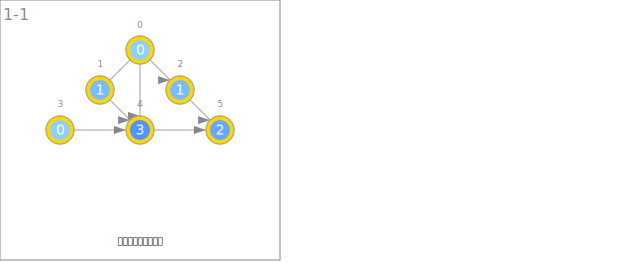
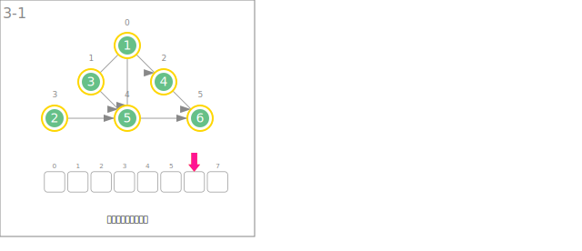

シンボル
| データ | ||
|---|---|---|
| ノードの入次数 | deg | |
 | ソート済みの順番 | order |
| 入次数の初期化 | ||
|---|---|---|
 | 入次数を求めます。 | |
| ソート | ||
 | 入次数が0のノードをキューに挿入します。 | que.enqueue(v) |
| 入次数が0のノードをキューから取り出し、順番を確定します。 | u ← que.dequeue() order[u] ← t++ | |
 | 隣接するノードの入次数を１減らします。 | deg[v]-- |
 | 順番が確定しているノードのグループを拡張していきます。 | orderが決定しているノード |
| 順番の出力 | ||
 | 順番を出力します。 | |
アニメーション
入次数の初期化

ソート

順番の出力
